Onde encontrar o produto?
Uma base organizada ajuda a começar a pesquisa de fornecedores.
BLACK FRIDAY VTD PARA PEQUENOS LOJISTAS
Pesquise fornecedores, prepare as próximas datas comerciais e organize as entradas e saídas em uma plataforma feita para a rotina da sua loja.
Conteúdo digital · Acesso pelo celular e computador
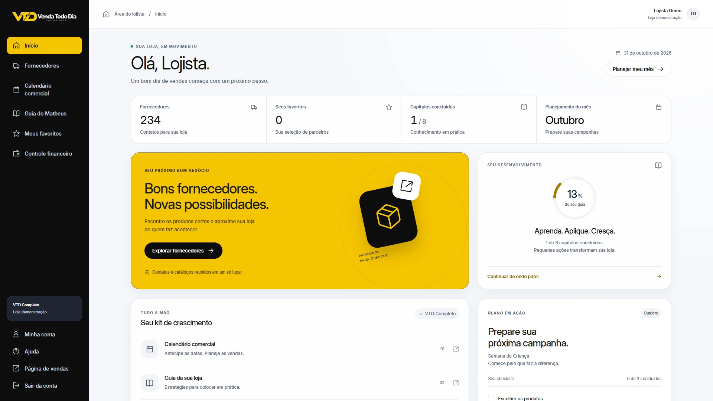
CONHEÇA A PROPOSTA
Entenda para quem o VTD foi pensado e como as ferramentas podem fazer parte do dia a dia da sua loja.
Reprodução automática sem som.
Se a apresentação não carregar, abra o vídeo original ↗.
VEJA EM FUNCIONAMENTO
Uma demonstração real: fornecedores, calendário, guia e financeiro. Conta e valores são fictícios.
Telas reais · Dados de demonstração · Sem áudio
Visão geral; busca e filtros de fornecedores; favoritos; calendário e checklists; capítulos, tarefas e anotações; entradas, saídas e pendências do financeiro. Ao final, a oferta de seis meses por R$ 197.
A ROTINA DE QUEM TEM LOJA
Encontrar contatos, pensar nas campanhas e acompanhar o caixa faz parte do mesmo trabalho.
Uma base organizada ajuda a começar a pesquisa de fornecedores.
Consulte o calendário para planejar a compra e a divulgação antes.
Transforme ideias em tarefas e acompanhe o que já foi preparado.
Registre entradas, saídas e vencimentos para consultar depois.
O QUE ESTÁ INCLUÍDO
Diretório, calendário, guia, favoritos, tarefas e financeiro no mesmo acesso por seis meses.
01 FORNECEDORES
Consulte 234 fornecedores para pesquisar produtos, comparar condições e negociar diretamente.
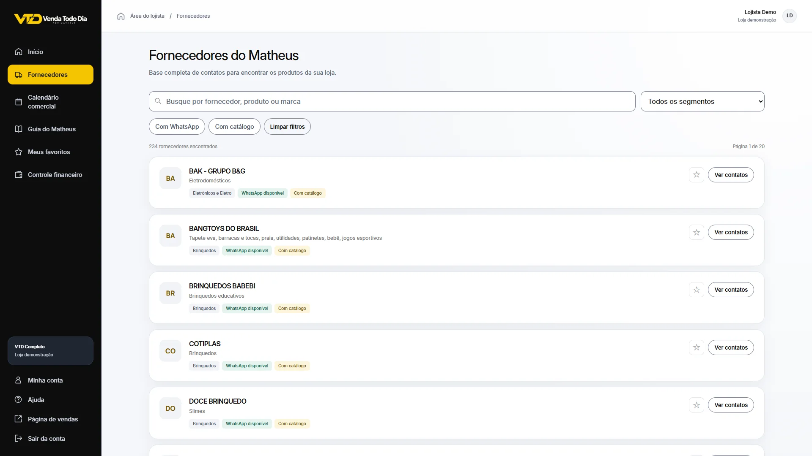
Ampliar tela ↗02 CALENDÁRIO COMERCIAL
Consulte os 12 meses do calendário e prepare as campanhas que fazem sentido para o público da sua loja.
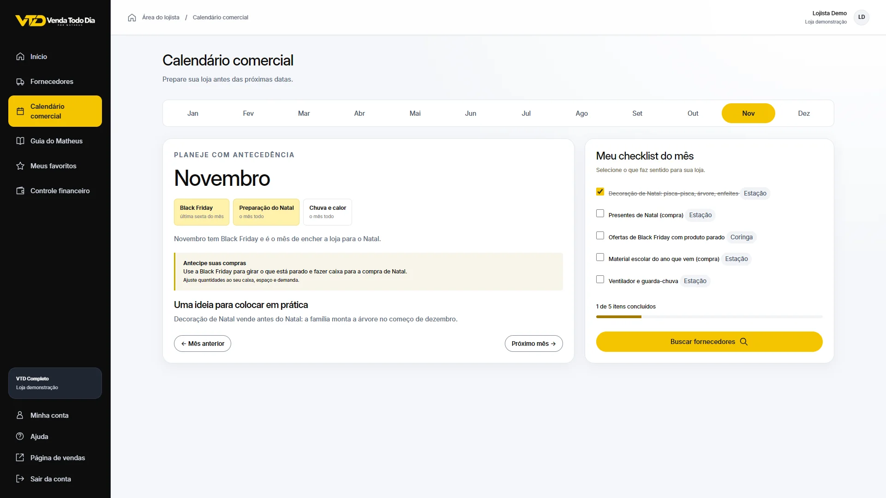
Ampliar tela ↗03 GUIA DO MATHEUS
Oito capítulos de orientações para transformar a leitura em ações na rotina. Registre suas ideias e acompanhe o que concluiu.
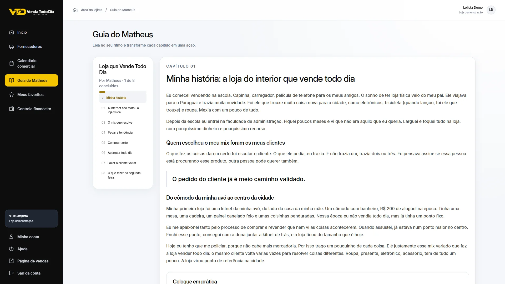
Ampliar tela ↗04 CONTROLE FINANCEIRO
Registre movimentações manualmente e acompanhe contas a pagar, a receber e valores realizados e projetados. O financeiro está incluído nesta oferta.
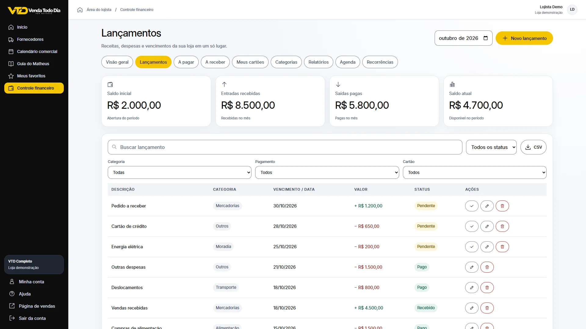
Ampliar tela ↗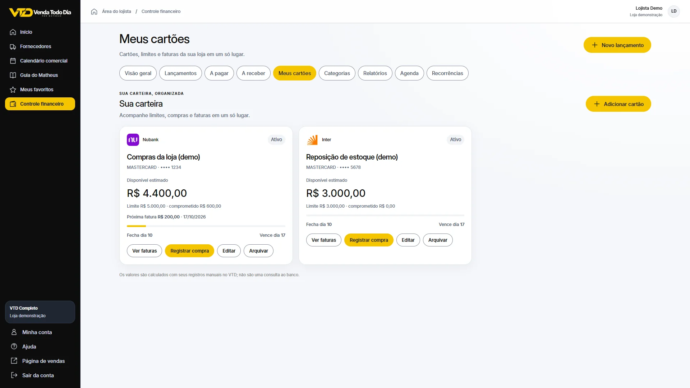
Ampliar tela ↗Cadastre cartões, acompanhe limites estimados e consulte compras e faturas.
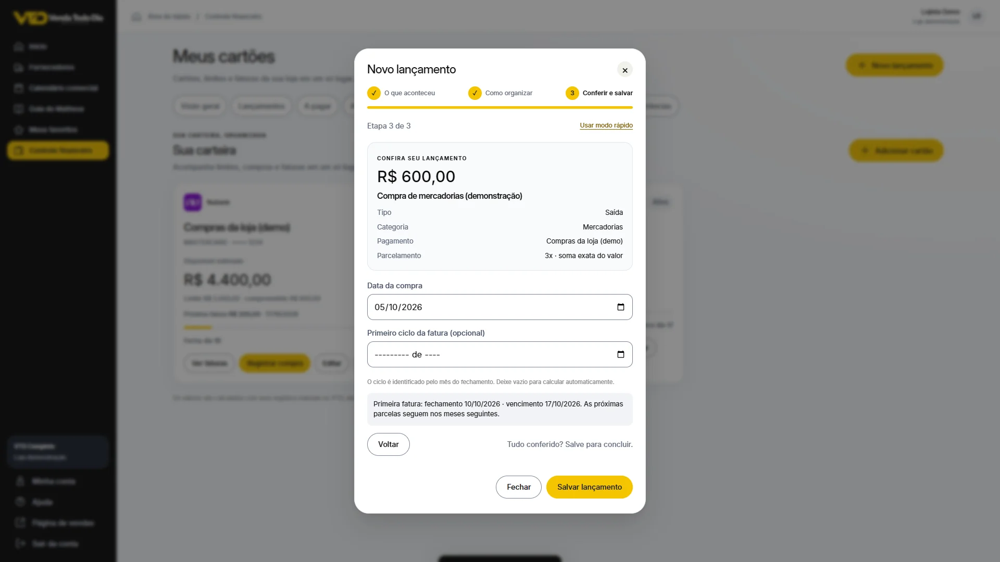
Ampliar tela ↗Organize o lançamento em etapas, escolha a categoria e confira os dados antes de salvar.
Sistema em funcionamento com dados demonstrativos. Clique nas telas para ampliar.
UMA AMOSTRA DA BASE
Seis registros conferidos no material do VTD. As negociações são feitas diretamente com as empresas.
Brinquedos para diferentes idades
Brinquedos e utilidades domésticas
Acessórios e áudio
Acessórios e áudio
Variedades, utilidades e presentes
Utilidades, brinquedos e presentes
6 registros nesta amostra · Base com 234 fornecedores
POR DENTRO DA PLATAFORMA
Abra as imagens para conferir os detalhes. Capturas reais do VTD, em computador e celular.
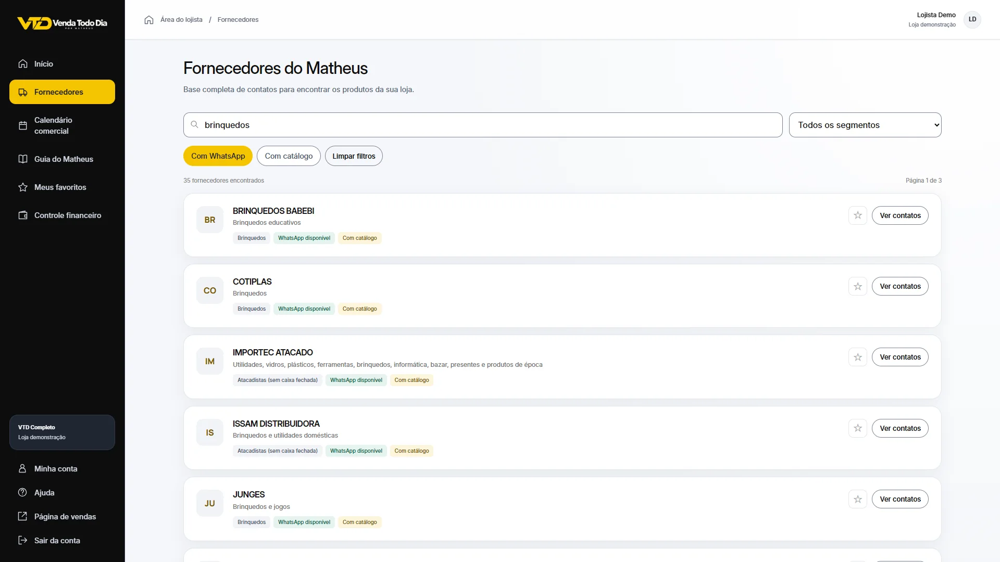
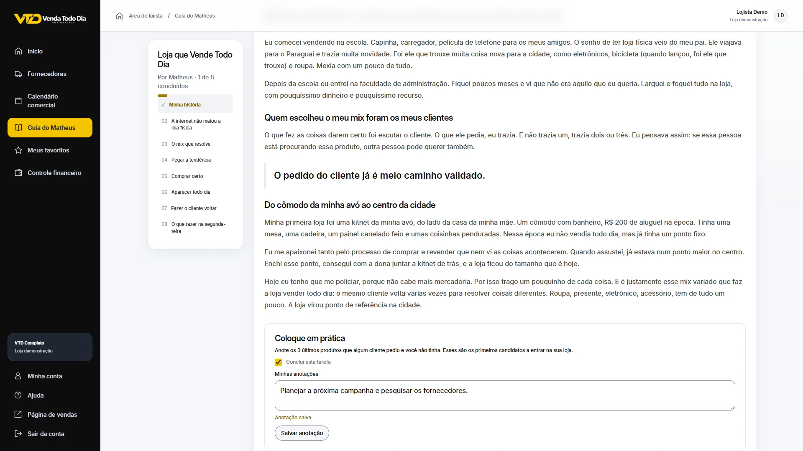
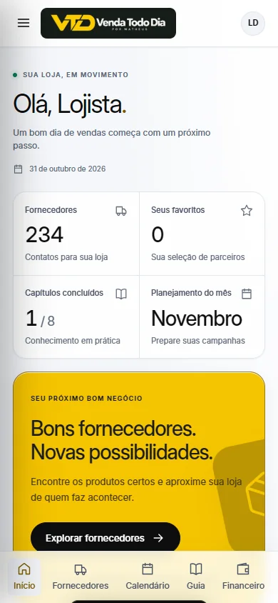
COMO FUNCIONA
Finalize a compra de R$ 197 pelo checkout oficial da Greenn.
Use as instruções enviadas pelos canais da compra para acessar o VTD.
Explore os fornecedores, consulte as datas e registre os próximos passos.
BLACK FRIDAY VTD
Um lugar para pesquisar fornecedores, preparar campanhas, aplicar as orientações do Matheus e acompanhar o financeiro.
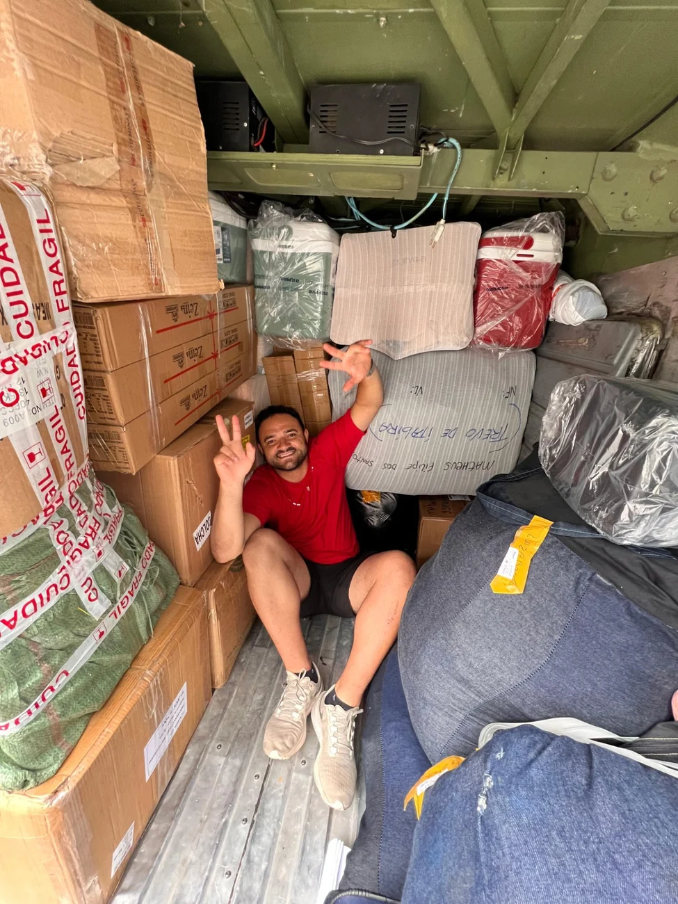
A EXPERIÊNCIA POR TRÁS DO VTD
Eu sou o Matheus. Aqui na minha cidade, são muitas vezes os mesmos clientes. Por isso, trabalho com eletrônicos, roupas, relógios, brinquedos, acessórios e presentes.
Na minha experiência, ter esse mix e acompanhar as tendências ajuda a encontrar oportunidades. Quando uma categoria tem menos saída, outra pode encontrar seu momento.
O VTD compartilha contatos e orientações a partir dessa rotina de lojista. É uma forma de reunir a pesquisa de fornecedores, o planejamento e a organização da loja.
“O dia que não vende uma coisa, vende outra.”
ANTES DE COMEÇAR
Veja o que está incluído e como funciona esta oferta.
Para pequenos lojistas que querem organizar a pesquisa de fornecedores, o planejamento comercial e as movimentações da loja. Quem está começando também pode adaptar o conteúdo à própria realidade.
Seis meses de acesso ao diretório de 234 fornecedores, calendário comercial de 12 meses, guia do Matheus com 8 capítulos, favoritos, tarefas, checklists e controle financeiro manual.
R$ 197 em pagamento único pelo período de seis meses. As formas de pagamento disponíveis são apresentadas no checkout oficial da Greenn.
Siga as instruções de acesso enviadas pelos canais da sua compra após a confirmação do pagamento. Guarde o e-mail utilizado no checkout e os comprovantes para consultar o responsável, se necessário.
Sim. Nesta oferta, o controle financeiro está incluído nos seis meses de acesso. Os registros são manuais. A oferta não inclui conexão automática com bancos, emissão fiscal, estoque ou PDV.
O acesso é digital. As mercadorias são negociadas e compradas diretamente com os fornecedores. Confirme autenticidade, frete, pedido mínimo e condições com cada empresa antes de comprar.
Sim. A plataforma pode ser acessada pelo navegador do celular, tablet ou computador. Não é necessário instalar um aplicativo para usar os recursos apresentados.
Utilize os dados de contato do responsável disponíveis no checkout oficial e na confirmação da compra. Esses canais permitem identificar o pedido e orientar o atendimento.
O período incluído nesta oferta é de seis meses. Consulte as condições de acesso e eventual renovação apresentadas na compra antes de finalizar. Não estamos anunciando uma assinatura mensal nesta página.
Os recursos ajudam na pesquisa, no planejamento e na organização. Os resultados dependem da execução, da demanda e das condições de cada negócio. Não há promessa de vendas ou resultados financeiros garantidos.
VENDA TODO DIA · POR MATHEUS
6 meses de acesso ao VTD · R$ 197 · Pagamento único